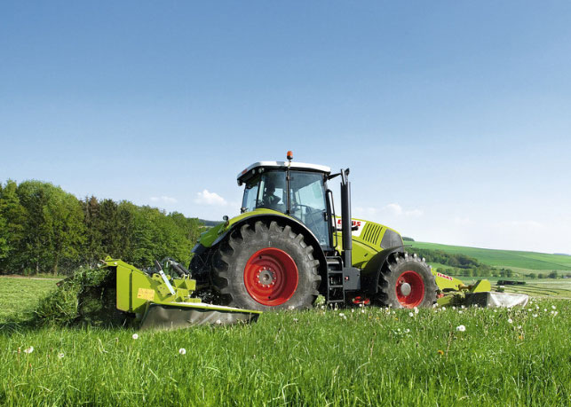
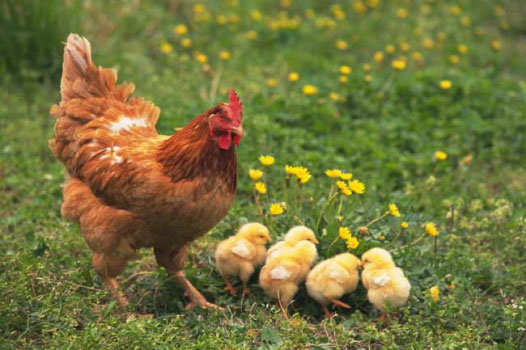

惠民利农，实惠金融，润泽三农！
润农金服致力于三农（农业、农村、农民）金融服务，为农业产业链提供金融服务。截止到2017年2月，业务覆盖山西、河南、山东等省份，签约农户过万户，签约种植面积近10万亩，签约贷款金额8000万。
润农金服在全国各省市成立扶贫惠农点，惠农点为农民提供各种便利的金融服务，包括农业金融、养殖畜牧业扶持、小额现金借贷、汽车金融、房屋建设装修、家用电器分期、婚丧嫁娶相关等分期服务。
受禽流感影响，很多地方关闭了活禽交易市场，禁止禽畜交易，消费者担心禽流感也使得肉禽的销售量和销售价格大跌。在北京一些农产品市场，原本销售鸡肉产品的商户因为没有销量很多已经转卖其他产品。
润农金服的养殖畜牧业商户也受到了不小的影响，商户目前出现了回款违约现象，现在的养鸡行业遇到了几年不遇的寒冬，即使前些年的禽流感行情也没差到如此地步，昨天的鸡蛋是2.4元/斤，今天又跌倒了2.35元/斤，淘汰鸡从原来的的5.8元/斤跌倒了现在的3.6元/斤。客户王某在当地是养殖行业是比较有诚信度和威望的大户，他家养了三棚鸡，共1万只，养牛一棚20只，准备在本次还款期间将其中的一棚2900只出售掉。由于本次掉价他如果现在出售将会损失两万元。
客户王某今天语气中肯的为我们讲述了他的资金周转困难的问题，并再三请示将本次借款延后三个月到四个月。在这期间他愿意每个月付着利息。到时即使行情再差也将淘汰鸡出售还账，再者不行就将几头牛出售还账。
对于该违约客户，我们经周边村民了解到，他确实是比较守信的养殖户，赶上了这个行情后他的流动资金出了问题；再者他妻子年前腊月去医院子宫瘤动手术了，花了不少钱，现在虽在养病期间，我看到也在鸡舍里帮忙干活，是比较朴实能干的家庭！所以我们当下就应准了他的请求！
“实惠金融，润泽三农”——这就是润农金服的初心，我们秉承惠农利民的原则，对于确实需要帮助的农户大力扶持，利益是企业发展的直接目标，责任却是企业壮大的动力源头，让农户得到真正的实惠，润及万家，这就是润农金服的企业信念！